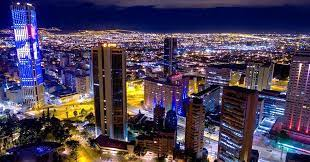

Bogotá
Bogotá es la extensa capital en altura de Colombia. La Candelaria, su centro con adoquines, cuenta con sitios coloniales como el Teatro Colón neoclásico y la Iglesia de San Francisco del siglo XVII. También alberga museos populares, incluido el Museo Botero, que exhibe arte de Fernando Botero, y el Museo del Oro, con piezas de oro precolombinas.
Sitios turisticos:
- Plaza Bolivar
- Museo del Oro
- Museo Botero
- Jardin Botánico
- Monserrate